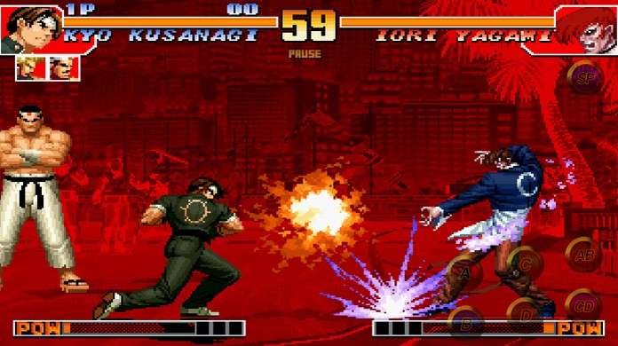
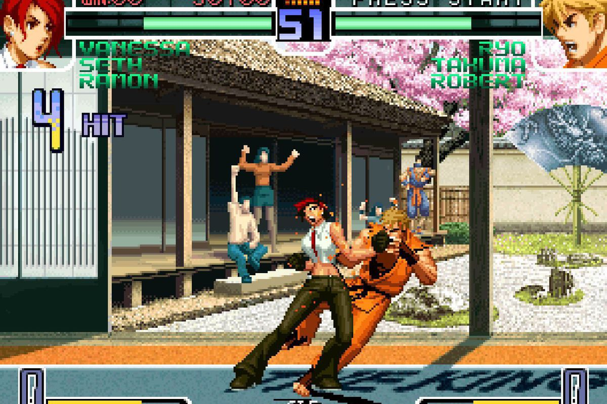
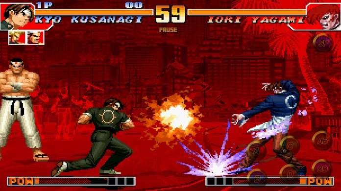
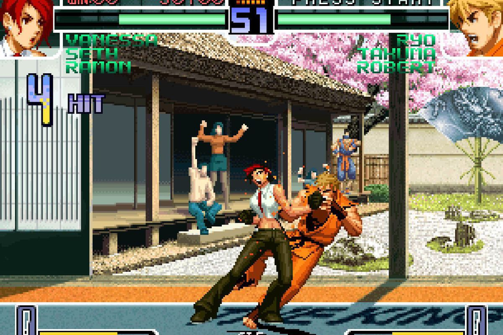

The King of Fighters é uma série de jogos de luta produzidos pela SNK. The King of Fighters começou por ser um crossover entre as séries Art of Fighting e Fatal Fury, além de personagens do jogos Ikari Warriors e Psycho Soldier, mas acabou por tornar-se uma das imagens de marca da companhia. O segundo jogo ( o primeiro é chamado Fatal Fury, The King of Fighters), The King of Fighters '94, foi lançado em 1994. Foi originalmente criada para o hardware arcade da SNK, o Neo Geo MVS, que serviu como plataforma base até 2004, ando a SNK desistiu da MVS em favor da placa Atomiswave. Apenas foram feitos dois jogos King of Fighters na plataforma Atomiswave (The King of Fighters Neowave e The King of Fighters XI) antes da SNK decidir descontinuar o uso da plataforma. A placa actual da série para as máquinas arcade é a Taito Type X2, usada pela primeira vez em The King of Fighters XII. Várias versões dos jogos originais das arcades e dos originais The King of Fighters têm sido lançados para os variados consoles domésticas.
 


